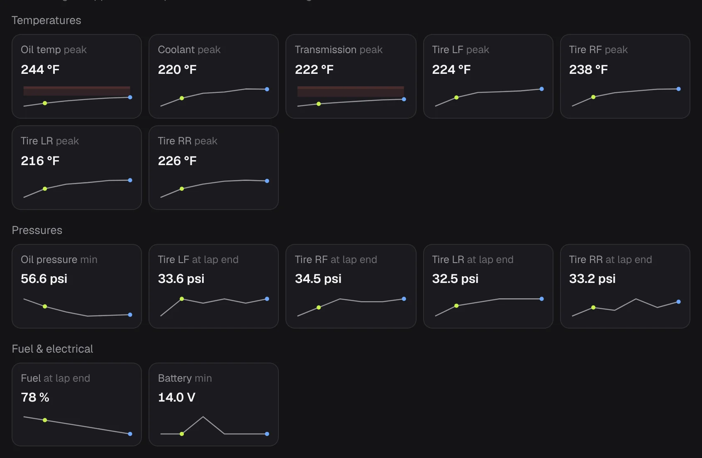

Engine and brake temperatures on track
A road car spends its life at part throttle with air flowing gently through its radiators. Twenty minutes on track is full throttle and full braking, over and over, and heat is what limits how long the car can keep it up. Knowing what to watch, and what to do when a number climbs, is most of mechanical sympathy.
Engine oil
Oil temperature is the best single indicator of how hard the engine is working. It rises more slowly than coolant and keeps rising after the coolant has settled, so it is the one that climbs through a long session.
- Warm it up first. Cold oil does not protect the engine properly. Use the out-lap, and stay away from high revs until the oil is up to temperature, which takes longer than the coolant.
- Watch the trend. A temperature that levels off is a car coping. One that climbs every lap will reach a limit; shorten the session.
- Watch oil pressure in long corners. A drop in pressure in a sustained corner can mean the oil is being pulled away from the pickup. Keeping the level at the full mark helps.
- Change it more often. Heat ages oil, and track use usually calls for a much shorter interval than the road.
Coolant
Coolant temperature responds quickly and should be steady. If it climbs, the car is producing more heat than it can shed: a hot day, following another car closely, or debris blocking a radiator.
- Drop back from the car in front to get clean air.
- Take a lap at reduced pace in a high gear.
- If it does not come down, come in.
- Never open a hot cooling system.
Brakes
Brakes turn speed into heat, and on track there is no time for it to go anywhere. Few cars report brake temperature, so you read it from the pedal:
| What you feel | What is happening | What to do |
|---|---|---|
| The pedal is firm, but the car is not slowing as it did | Pad fade: the pads are hotter than their working range | Ease off for a lap; brake earlier and for a shorter time. Track-rated pads cope with more heat. |
| The pedal goes long or soft | Fluid fade: the brake fluid is boiling | Come in. Bleed the brakes before going out again, and use fresh high-temperature fluid. |
| Vibration through the pedal or wheel under braking | Uneven pad material on the rotors, or a rotor past its best | Finish the session gently and inspect the rotors. |
A long pedal is the one never to drive around. See tracking brake pads, tires and fluids for what to check between events.
Other things that get hot
- Transmission and differential. Some cars report them; they rise slowly and need a long cool-down.
- Intake air. A turbocharged or supercharged engine loses power as its intake temperature climbs through a session. That is normal, and it explains laps that get slower with no change in your driving.
- Tires. See tire pressures.
Cooling down
- Take a full cool-down lap at reduced pace, using the brakes as little as you can. Moving air cools the car far better than idling does.
- Park with the parking brake off. Hot pads clamped against a hot rotor can leave material on it or stick. Leave the car in gear, or chock a wheel.
- Let the engine idle briefly if your manual asks for it, particularly with a turbocharger.
- Open the hood between sessions on a hot day.
Temperatures in Track Evolution
If your car records its own readings — a Corvette or Cadillac PDR video, for example — importing the recording fills in the session's Car tab: oil, coolant and transmission temperature, oil pressure, boost, the four tire pressures and temperatures, fuel and battery voltage, each as a small chart across the laps of the session.
Each chart shows the figure that matters for that reading — the peak of a temperature, the lowest oil pressure, a tire pressure as the lap ended — and is shaded when it approaches or passes a line worth a look, such as oil over about 130 °C or the battery under 12.5 V. Those lines are the app's general prompts to look closer, not your car's limits. A fuel line gives your burn per lap and the laps left at that rate.

Seeing a whole session at once shows what a gauge cannot: whether a temperature levelled off or was still climbing when you came in. The Car tab is on the web and in the phone apps, as part of Track Evolution Pro, and temperatures are shown in °C or °F to match your settings.